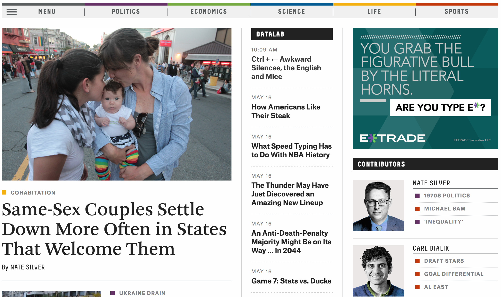
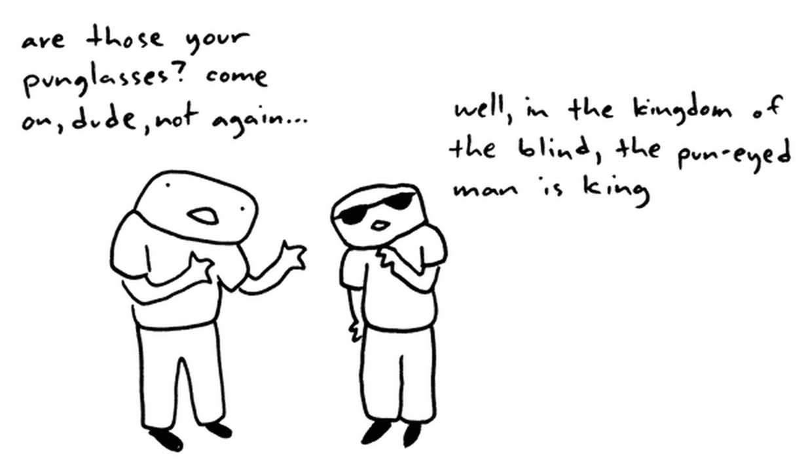

return jeffKeslin
these are a few of my favorite tech things...
FiveThirtyEight
In terms of content, FiveThirtyEight is like a dream come true. For the most part, it's a cross between my two favorite things: math and sports. And oh yeah, it's hosted by my intellectual hero, Nate Silver. I'm a big fan of Nate Silver's book, "The Signal and the Noise," and I've always dreamed of being able to get my news and sports updates from an author that loves charts and graphs as much as I do.
There's also something about the simplicity of the design and the way the information is organized on the page that I find comforting. The featured article is in plain sight at the top, the nav bar allows you search for an article of interest based on the topics (which are color coded) or you can search by the author with the sidebar on the right. The look is very clean and organized and simple, which I find appealing (I think you'll notice that as a theme when you see my next two choices).
After spending time on the site I feel a little anxious that I've just wasted so much time reading articles that I had no intention of reading, but the content is so rich with valuable information that it is not time spent that I regret.
Toothpaste For Dinner
Toothpaste for Dinner is a classic webcomic that's been around forever it feels like. Again, the simplicity of the site is appealing but also the simplicity and dryness of the content speaks to my strange sense of humor. The site has changed very little over the years which adds a nice nostalgic element to it.
The site has gotten a little messier with adverts all up and down the left side of the page and the social networking buttons appended to each cartoon. The extra material makes scrolling and navigating a little clunkier than it used to be, but the author has found new ways for you to search for archived material and randomly upload cartoons from the past years if you just can't get enough laughter.
I know what you're thinking, I ran out of ideas so I just picked the most recognizable website on the planet to save time. Not true! There's something magical about a company that has endless financial resources and technology (most of which it has created itself) and still has a homepage that has only 1 ugly logo and a search bar on a white background. Obviously Google has progressed to offering tons of services and products to people beyond its search algorithm, but it's still the only thing they allow to be their centerpiece when you visit, and all other items are hidden carefully at the top and bottom of the page. This kind of aesthetic is the opposite of sites like Yahoo! or CNN and is part of what makes it such a great company. I'll spare you the list of Google's products and services since we're all familiar with them and just end this paragraph with a tip of my cap to their always surprising and delightful Google doodles that I'm often treated to when I sit down at my desk at work and open my computer for the first time.
Dev Bootcamp
Bobolinks 2014
Chicago, IL